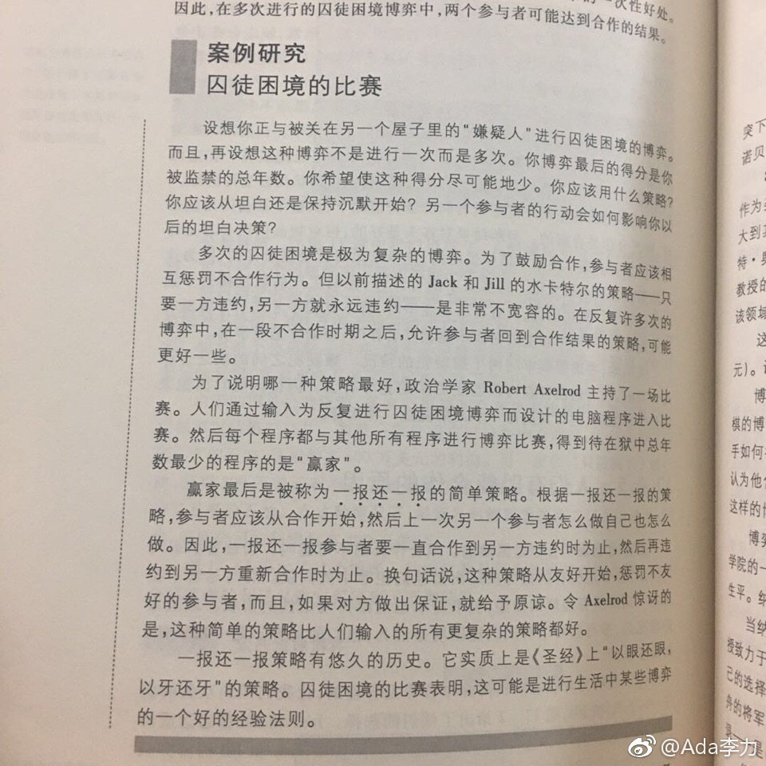

//@舒服自由人：这个在混沌系统研究中有更详细的阐述，AI博弈不同方案数据统计结果是：如果合作只进行一次，一锤子买卖直接选背叛生存机率高，因为你根本没机会二次惩罚对方可能就挂了；当合作或说博弈多次，就是首先合作然后惩罚背叛者的系统生存机率高。 详见《复杂》这本书
@Ada李力:
#读书#很久之前读过教材《社会心理学》，如果现在说起还留有什么印象，马上想起来的就是人际交往中有个最优策略：
以善为始，以牙还牙。
后来越琢磨越觉得这个简单的策略有意思。当跟陌生人开始合作时，选择相信还是提防？应该选择相信。当合作方欺骗了你怎么办？一定要给对方教训。当然，如果合作方表现友好，你要更友好，这样才能推动合作的深化。
这么简单的策略实行起来难点在哪里呢？跟陌生人开始合作时，采取开放，友善，信任的态度，违背大多数中国人的意识和习惯。当被合作者坑了或者欺骗之后，很多人或者没有实力惩罚对方，或者觉得惩罚麻烦而放弃教训对方。
今天读到经济学里的囚徒困境，发现赢家策略是一样的：从合作开始，一报还一报。
我想了想自己，以善为始，合作开始，都容易做到，正向一报还一报，也做得可以。就是惩罚性的一报还一报，做得不行。做不到的原因？怂，或者实力不够。
以善为始，以牙还牙。
后来越琢磨越觉得这个简单的策略有意思。当跟陌生人开始合作时，选择相信还是提防？应该选择相信。当合作方欺骗了你怎么办？一定要给对方教训。当然，如果合作方表现友好，你要更友好，这样才能推动合作的深化。
这么简单的策略实行起来难点在哪里呢？跟陌生人开始合作时，采取开放，友善，信任的态度，违背大多数中国人的意识和习惯。当被合作者坑了或者欺骗之后，很多人或者没有实力惩罚对方，或者觉得惩罚麻烦而放弃教训对方。
今天读到经济学里的囚徒困境，发现赢家策略是一样的：从合作开始，一报还一报。
我想了想自己，以善为始，合作开始，都容易做到，正向一报还一报，也做得可以。就是惩罚性的一报还一报，做得不行。做不到的原因？怂，或者实力不够。
- 